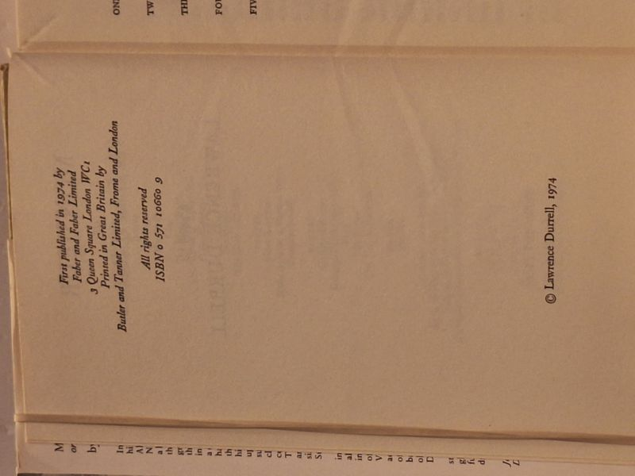

Monsieur, or The Prince of Darkness
Lawrence Durrell · Faber and Faber, London, 1974

C$30 · Very Good condition
Faber and Faber Limited, London, 1974. True first edition of the opening novel of Lawrence Durrell's Avignon Quintet. Hardcover with unclipped dust jacket. ISBN 0 571 10660 9. Printed in Great Britain by Butler and Tanner Limited, Frome and London. Bookblock clean, binding tight, no foxing or prior-owner marks. Dust jacket in very good condition with sepia-toned watercolour of a Provencal castle. The first Faber UK printing of the Quintet that culminates in Quinx (1985) - a five-novel sequence exploring Templar mysticism, Mediterranean myth, gnostic Christianity, and the philosophical legacy of Alexandria. Of interest to Durrell completists and collectors of Faber UK literary firsts.
Details
- Publisher: Faber and Faber, London, 1974
- Binding: Hardcover
- Edition: First Edition
- Condition: Very Good
- Dust jacket: Very Good
- ISBN: 0-571-10660-9
- Category: Literary Fiction